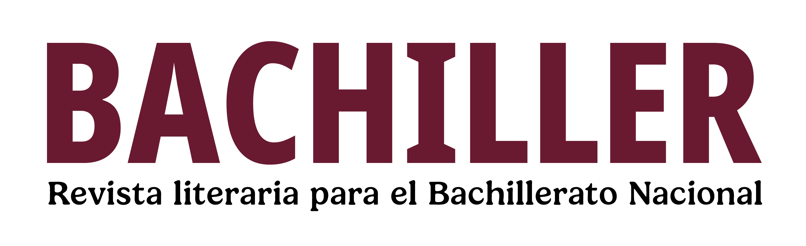

Sección: Faro de papel
Revista mensual con recursos, ideas y contenidos para fortalecer
la práctica docente en la
Educación Media Superior.


Luis Flores nos ofrece
un recorrido por
algunos poemas que
han sido
musicalizados,
mostrando cómo la
palabra escrita
encuentra nuevas
formas de vida en las
canciones.

Las calaveritas literarias, además de ser atrevidas y jocosas escenas donde aparece la Muerte, son, quizás, el género poético que México le ha dado a la poesía

¿Toda la poesía es lírica? ¿A qué nos referimos con el lirismo de las personas que escriben poesía? Luis Flores reflexiona sobre estas palabras.

La lectura en voz alta es un viaje interno de nuestra voz. Aquí te contamos el gozo de leer poesía en voz alta.

Te compartimos varias perspectivas donde la naturaleza se convierte en poesía.